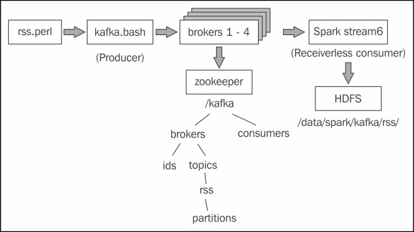

This chapter examines stream processing architecture. For instance, what happens in cases where the stream data delivery rate exceeds the potential data processing rate? Systems like Kafka provide the possibility of solving this issue by providing the ability to use multiple data topics and consumers.
There is a possibility of using the Spark streaming context method called socketTextStream to stream data via TCP/IP, by specifying a hostname and a port number. The Scala-based code example in this section will receive data on port 10777 that was supplied using the netcat Linux command. The code sample starts by defining the package name, and importing Spark, the context, and the streaming classes. The object class named stream2 is defined, as it is the main method with arguments:
The number of arguments passed to the class is checked to ensure that it is the hostname and the port number. A Spark configuration object is created with an application name defined. The Spark and streaming contexts are then created. Then, a streaming batch time of 10 seconds is set:
A DStream called rawDstream is created by calling the socketTextStream method of the streaming context using the host and port name parameters.
A top-ten word count is created from the raw stream data by splitting words by spacing. Then a (key,value) pair is created as (word,1), which is reduced by the key value, this being the word. So now, there is a list of words and their associated counts. Now, the key and value are swapped, so the list becomes (count and word). Then, a sort is done on the key, which is now the count. Finally, the top 10 items in the rdd, within the DStream, are taken and printed out:
The code closes with the Spark Streaming start, and awaitTermination methods being called to start the stream processing and await process termination:
The data for this application is provided, as I stated previously, by the Linux netcat (nc) command. The Linux cat command dumps the contents of a log file, which is piped to nc. The lk options force netcat to listen for connections, and keep on listening if the connection is lost. This example shows that the port being used is 10777:
The output from this TCP-based stream processing is shown here. The actual output is not as important as the method demonstrated. However, the data shows, as expected, a list of 10 log file words in descending count order. Note that the top word is empty because the stream was not filtered for empty words:
This is interesting if you want to stream data using Apache Spark streaming, based upon TCP/IP from a host and port. But what about more exotic methods? What if you wish to stream data from a messaging system, or via memory-based channels? What if you want to use some of the big data tools available today like Flume and Kafka? The next sections will examine these options, but first I will demonstrate how streams can be based upon files.
Flume is an Apache open source project and product, which is designed to move large amounts of data at a big data scale. It is highly scalable, distributed, and reliable, working on the basis of data source, data sink, and data channels, as the diagram here, taken from the http://flume.apache.org/ website, shows:
Flume uses agents to process data streams. As can be seen in the previous figure, an agent has a data source, a data processing channel, and a data sink. A clearer way to describe this is via the following figure. The channel acts as a queue for the sourced data and the sink passes the data to the next link in the chain.
Flume agents can form Flume architectures; the output of one agent's sink can be the input to a second agent. Apache Spark allows two approaches to using Apache Flume. The first is an Avro push-based in-memory approach, whereas the second one, still based on Avro, is a pull-based system, using a custom Spark sink library.
I installed Flume via the Cloudera CDH 5.3 cluster manager, which installs a single agent. Checking the Linux command line, I can see that Flume version 1.5 is now available:
The Flume-based Spark example that I will initially implement here, is the Flume-based push approach, where Spark acts as a receiver, and Flume pushes the data to Spark. The following figure represents the structure that I will implement on a single node:
The message data will be sent to port 10777 on a host called hc2r1m1 using the Linux netcat (nc) command. This will act as a source (source1) for the Flume agent (agent1), which will have an in-memory channel called channel1. The sink used by agent1 will be Apache Avro based, again on a host called hc2r1m1, but this time, the port number will be 11777. The Apache Spark Flume application stream4 (which I will describe shortly) will listen for Flume stream data on this port.
I start the streaming process by executing the netcat (nc) command next, against the 10777 port. Now, when I type text into this window, it will be used as a Flume source, and the data will be sent to the Spark application:
In order to run my Flume agent, agent1, I have created a Flume configuration file called agent1.flume.cfg, which describes the agent's source, channel, and sink. The contents of the file are as follows. The first section defines the agent1 source, channel, and sink names.
The next section defines source1 to be netcat based, running on the host called hc2r1m1, and 10777 port:
The agent1 channel, channel1, is defined as a memory-based channel with a maximum event capacity of 1000 events:
Finally, the agent1 sink, sink1, is defined as an Apache Avro sink on the host called hc2r1m1, and 11777 port:
I have created a Bash script called flume.bash to run the Flume agent, agent1. It looks like this:
The script calls the Flume executable flume-ng, passing the agent1 configuration file. The call specifies the agent named agent1. It also specifies the Flume configuration directory to be /etc/flume-ng/conf/, the default value. Initially, I will use a netcat Flume source with a Scala-based example to show how data can be sent to an Apache Spark application. Then, I will show how an RSS-based data feed can be processed in a similar way. So initially, the Scala code that will receive the netcat data looks like this. The class package name and the application class name are defined. The necessary classes for Spark and Flume are imported. Finally, the main method is defined:
The host and port name arguments for the data stream are checked and extracted:
The Spark and streaming contexts are created. Then, the Flume-based data stream is created using the stream context host and port number. The Flume-based class FlumeUtils has been used to do this by calling it's createStream method:
Finally, a stream event count is printed, and (for debug purposes while we test the stream) the stream content is dumped. After this, the stream context is started and configured to run until terminated via the application:
Having compiled it, I will run this application using spark-submit. In the other chapters of this book, I will use a Bash-based script called run_stream.bash to execute the job. The script looks like this:
So, this script sets some Spark-based variables, and a JAR library path for this job. It takes which Spark class to run, as its first parameter. It passes all the other variables, as parameters, to the Spark application class job. So, the execution of the application looks like this:
This means that the Spark application is ready, and is running as a Flume sink on port 11777. The Flume input is ready, running as a netcat task on port 10777. Now, the Flume agent, agent1, can be started using the Flume script called flume.bash to send the netcat source-based data to the Apache Spark Flume-based sink:
Now, when the text is passed to the netcat session, it should flow through Flume, and be processed as a stream by Spark. Let's try it:
Three simple pieces of text have been added to the netcat session, and have been acknowledged with an OK, so that they can be passed to Flume. The debug output in the Flume session shows that the events (one per line ) have been received and processed:
Finally, in the Spark stream4 application session, three events have been received and processed. In this case, dumped to the session to prove the point that the data arrived. Of course, this is not what you would normally do, but I wanted to prove data transit through this configuration:
This is interesting, but it is not really a production-worthy example of Spark Flume data processing. So, in order to demonstrate a potentially real data processing approach, I will change the Flume configuration file source details so that it uses a Perl script, which is executable as follows:
The Perl script, which is referenced previously, rss.perl, just acts as a source of Reuters science news. It receives the news as XML, and converts it into JSON format. It also cleans the data of unwanted noise. First, it imports packages like LWP and XML::XPath to enable XML processing. Then, it specifies a science-based Reuters news data source, and creates a new LWP agent to process the data, similar to this:
Then an infinite while loop is opened, and an HTTP GET request is carried out against the URL. The request is configured, and the agent makes the request via a call to the request method:
If the request is successful, then the XML data returned, is defined as the decoded content of the request. Title information is extracted from the XML, via an XPath call using the path called /rss/channel/item/title:
For each node in the extracted title data title XML string, data is extracted. It is cleaned of unwanted XML tags, and added to a Perl-based array called titles:
The same process is carried out for description-based data in the request response XML. The XPath value used this time is /rss/channel/item/description/. There are many more tags to be cleaned from the description data, so there are many more Perl searches, and line replacements that act on this data (s///g):
Finally, the XML-based title and description data is output in the RSS JSON format using a print command. The script then sleeps for 30 seconds, and requests more RSS news information to process:
I have created a second Scala-based stream processing code example called stream5. It is similar to the stream4 example, but it now processes the rss item data from the stream. A case class is defined next to process the category, title, and summary from the XML rss information. An html location is defined to store the resulting data that comes from the Flume channel:
The rss stream data from the Flume-based event is converted into a string. It is then formatted using the case class called RSSItem. If there is event data, it is then written to an HDFS directory using the previous hdfsdir path:
Running this code sample, it is possible to see that the Perl rss script is producing data, because the Flume script output indicates that 80 events have been accepted and received:
The Scala Spark application stream5 has processed 80 events in two batches:
And the events have been stored on HDFS, under the expected directory, as the Hadoop file system ls command shows here:
Also, using the Hadoop file system cat command, it is possible to prove that the files on HDFS contain rss feed news-based data as shown here:
This Spark stream-based example has used Apache Flume to transmit data from an rss source, through Flume, to HDFS via a Spark consumer. This is a good example, but what if you want to publish data to a group of consumers? In the next section, I will examine Apache Kafka—a publish subscribe messaging system, and determine how it can be used with Spark.
Apache Kafka (http://kafka.apache.org/) is a top level open-source project in Apache. It is a big data publish/subscribe messaging system that is fast and highly scalable. It uses message brokers for data management, and ZooKeeper for configuration, so that data can be organized into consumer groups and topics. Data in Kafka is split into partitions. In this example, I will demonstrate a receiver-less Spark-based Kafka consumer, so that I don't need to worry about configuring Spark data partitions when compared to my Kafka data.
In order to demonstrate Kafka-based message production and consumption, I will use the Perl RSS script from the last section as a data source. The data passing into Kafka and onto Spark will be Reuters RSS news data in the JSON format.
As topic messages are created by message producers, they are then placed in partitions in message order sequence. The messages in the partitions are retained for a configurable time period. Kafka then stores the offset value for each consumer, which is that consumer's position (in terms of message consumption) in that partition.
I am currently using Cloudera's CDH 5.3 Hadoop cluster. In order to install Kafka, I need to download a Kafka JAR library file from: http://archive.cloudera.com/csds/kafka/.
Having downloaded the file, and given that I am using CDH cluster manager, I then need to copy the file to the /opt/cloudera/csd/ directory on my NameNode CentOS server, so that it will be visible to install:
I then need to restart the Cloudera cluster manager server on my NameNode, or master server, so that the change will be recognized. This was done as root using the service command, which is as follows:
Now, the Kafka parcel should be visible within the CDH manager under Hosts | Parcels, as shown in the following figure. You can follow the usual download, distribution, and activate cycle for the CDH parcel installation:
I have installed Kafka message brokers on each Data Node, or Spark Slave machine in my cluster. I then set the Kafka broker ID values for each Kafka broker server, giving them a broker.id number of 1 through 4. As Kafka uses ZooKeeper for cluster data configuration, I wanted to keep all the Kafka data in a top level node called kafka in ZooKeeper. In order to do this, I set the Kafka ZooKeeper root value, called zookeeper.chroot, to /kafka. After making these changes, I restarted the CDH Kafka servers for the changes to take effect.
With Kafka installed, I can check the scripts available for testing. The following listing shows Kafka-based scripts for message producers and consumers, as well as scripts for managing topics, and checking consumer offsets. These scripts will be used in this section in order to demonstrate Kafka functionality:
In order to run the installed Kafka servers, I need to have the broker server ID's (broker.id) values set, else an error will occur. Once Kafka is installed and running, I will need to prepare a message producer script. The simple Bash script given next, called kafka.bash, defines a comma-separated broker list of hosts and ports. It also defines a topic called rss. It then calls the Perl script rss.perl to generate the RSS-based data. This data is then piped into the Kafka producer script called kafka-console-producer to be sent to Kafka.
Notice that I have not mentioned Kafka topics at this point. When a topic is created in Kafka, the number of partitions can be specified. In the following example, the kafka-topics script has been called with the create option. The number of partitions have been set to 5, and the data replication factor has been set to 3. The ZooKeeper server string has been defined as hc2r1m2-4 with a port number of 2181. Also note that the top level ZooKeeper Kafka node has been defined as /kafka in the ZooKeeper string:
I have also created a Bash script called kafka_list.bash for use during testing, which checks all the Kafka topics that have been created, and also the Kafka consumer offsets. It calls the kafka-topics commands with a list option, and a ZooKeeper string to get a list of created topics. It then calls the Kafka script called kafka-consumer-offset-checker with a ZooKeeper string—the topic name and a group name to get a list of consumer offset values. Using this script, I can check that my topics are created, and the topic data is being consumed correctly:
Next, I need to create the Apache Spark Scala-based Kafka consumer code. As I said, I will create a receiver-less example, so that the Kafka data partitions match in both, Kafka and Spark. The example is called stream6. First, the package is defined, and the classes are imported for Kafka, spark, context, and streaming. Then, the object class called stream6, and the main method are defined. The code looks like this:
Next, the class parameters (broker's string, group ID, and topic) are checked and processed. If the class parameters are incorrect, then an error is printed, and execution stops, else the parameter variables are defined:
The Spark context is defined in terms of an application name. Again the Spark URL has been left as the default. The streaming context has been created using the Spark context. I have left the stream batch interval at 10 seconds, which is the same as the last example. However, you can set it using a parameter of your choice:
Next, the broker list and group ID are set up as parameters. These values are then used to create a Kafka-based Spark stream called rawDStream:
I have again printed the stream event count for debug purposes, so that I know when the application is receiving and processing the data:
The HDSF location for the Kafka data has been defined as /data/spark/kafka/rss/. It has been mapped from the DStream into the variable lines. Using the foreachRDD method, a check on the data count is carried out on the lines variable, before saving the data into HDFS using the saveAsTextFile method:
Finally, the Scala script closes by starting the stream processing, and setting the application class to run until terminated with awaitTermination:
With all of the scripts explained and the Kafka CDH brokers running, it is time to examine the Kafka configuration, which if you remember is maintained by Apache ZooKeeper (all of the code samples that have been described so far will be released with the book). I will use the zookeeper-client tool, and connect to the zookeeper server on the host called hc2r1m2 on the 2181 port. As you can see here, I have received a connected message from the client session:
If you remember, I specified the top level ZooKeeper directory for Kafka to be /kafka. If I examine this now via a client session, I can see the Kafka ZooKeeper structure. I will be interested in brokers (the CDH Kafka broker servers), and consumers (the previous Spark Scala code). The ZooKeeper ls commands show that the four Kafka servers have registered with ZooKeeper, and are listed by their broker.id configuration values one to four:
I will create the topic that I want to use for this test using the Kafka script kafka-topics with a create flag. I do this manually, because I can demonstrate the definition of the data partitions while I do it. Note that I have set the partitions in the Kafka topic rss to five as shown in the following piece of code. Note also that the ZooKeeper connection string for the command has a comma-separated list of ZooKeeper servers, terminated by the top level ZooKeeper Kafka directory called /kafka. This means that the command puts the new topic in the proper place:
Now, when I use the ZooKeeper client to check the Kafka topic configuration, I can see the correct topic name, and the expected number of the partitions:
This describes the configuration for the Kafka broker servers in ZooKeeper, but what about the data consumers? Well, the following listing shows where the data will be held. Remember though, at this time, there is no consumer running, so it is not represented in ZooKeeper:
In order to start this test, I will run my Kafka data producer, and consumer scripts. I will also check the output of the Spark application class and need to check the Kafka partition offsets and HDFS to make sure that the data has arrived. This is quite complicated, so I will add a diagram here in the following figure to explain the test architecture.
The Perl script called rss.perl will be used to provide a data source for a Kafka data producer, which will feed data into the CDH Kafka broker servers. The data will be stored in ZooKeeper, in the structure that has just been examined, under the top level node called /kafka. The Apache Spark Scala-based application will then act as a Kafka consumer, and read the data that it will store under HDFS.

In order to try and explain the complexity here, I will also examine my method of running the Apache Spark class. It will be started via the spark-submit command. Remember again that all of these scripts will be released with this book, so that you can examine them in your own time. I always use scripts for server test management, so that I encapsulate complexity, and command execution is quickly repeatable. The script, run_stream.bash, is like many example scripts that have already been used in this chapter, and this book. It accepts a class name and the class parameters, and runs the class via spark-submit:
I then used a second script, which calls the run_kafka_example.bash script to execute the Kafka consumer code in the previous stream6 application class. Note that this script sets up the full application class name—the broker server list. It also sets up the topic name, called rss, to use for data consumption. Finally, it defines a consumer group called group1. Remember that Kafka is a publish/subscribe message brokering system. There may be many producers and consumers organized by topic, group, and partition:
So, I will start the Kafka consumer by running the run_kafka_example.bash script, which in turn will run the previous stream6 Scala code using spark-submit. While monitoring Kafka data consumption using the script called kafka_list.bash, I was able to get the kafka-consumer-offset-checker script to list the Kafka-based topics, but for some reason, it will not check the correct path (under /kafka in ZooKeeper) when checking the offsets as shown here:
By starting the Kafka producer rss feed using the script kafka.bash, I can now start feeding the rss-based data through Kafka into Spark, and then into HDFS. Periodically checking the spark-submit session output it can be seen that events are passing through the Spark-based Kafka DStream. The following output comes from the stream count in the Scala code, and shows that at that point, 28 events were processed:
By checking HDFS under the /data/spark/kafka/rss/ directory, via the Hadoop file system ls command, it can be seen that there is now data stored on HDFS:
By checking the contents of this directory, it can be seen that an HDFS part data file exists, which should contain the RSS-based data from Reuters:
Using the Hadoop file system cat command below, I can dump the contents of this HDFS-based file to check its contents. I have used the Linux head command to limit the data to save space. Clearly this is RSS Reuters science based information that the Perl script rss.perl has converted from XML to RSS JSON format.
This ends this Kafka example. It can be seen that Kafka brokers have been installed and configured. It shows that an RSS data-based Kafka producer has fed data into the brokers. It has been proved, using the ZooKeeper client, that the Kafka architecture, matching the brokers, topics, and partitions has been set up in ZooKeeper. Finally, it has been shown using the Apache Spark-based Scala code, in the stream6 application, that the Kafka data has been consumed and saved to HDFS.


{kind=link}